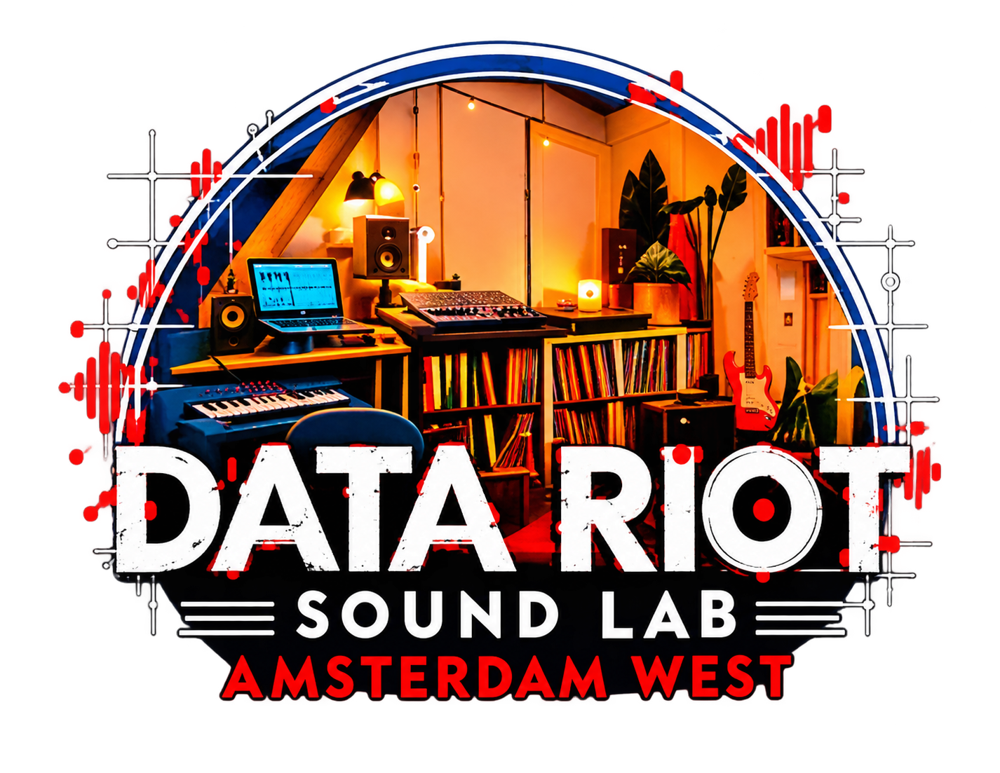
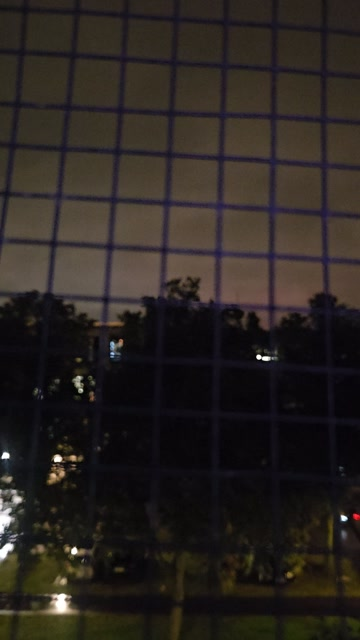

Data Riot

Experimental audiovisual explorations from a sound lab in an attic in Amsterdam West.
A lifelong love of vinyl records, books on music and science, shaped by a constant curiosity for science, nature and architecture. Music, image and sound, guitars, bass, synthesizers and everyday photographs and video footage become raw material for spontaneous audiovisual experiments, where colours, shapes, movement and noise collide.

M83 Attic
Lights
